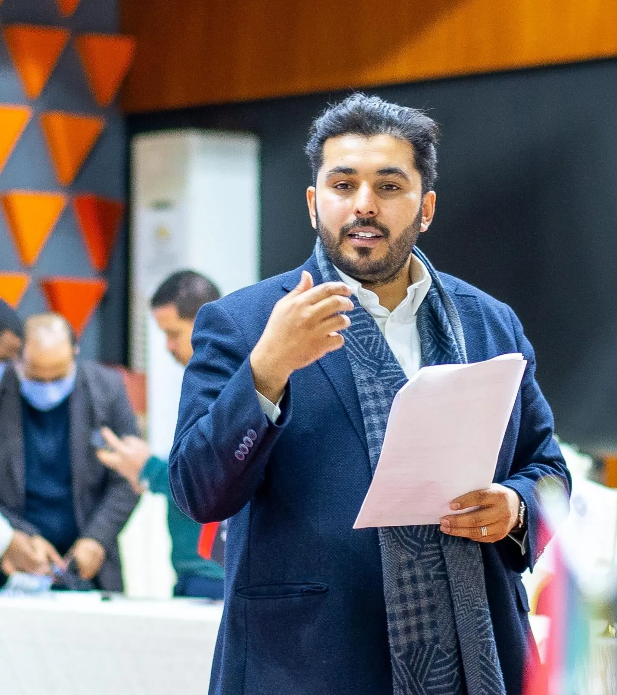

المهندسعماد إبراهيم شنب
ناشط مدني ليبي، يعمل في دعم الشباب وبناء السلام ونشر ثقافة الحوار والمناظرة في المدن الليبية.
+8,750شاب وشابة تدرّبوا في أكثر من 40 مدينة ليبيةمؤسسة الحوار والمناظرة
+2,500شاب وشابة في المؤتمر الوطني للشباب بطرابلس2021
+35جلسة حوارية في مختلف المدن الليبيةمنتدى حوار الشباب
+20نادي مناظرة أُسّس في ليبيامؤسسة الحوار والمناظرة
أدوار اليوم
ثلاث مؤسسات يقودها، تجمع الحوار والمناظرة وتمكين الشباب ومراقبة الانتخابات.
هذه الأدوار امتداد لعمل بدأ قبل سنوات، وآخر ما أنجزه منها مسجّل بتاريخه.
آخر النشاطات
لقاءات ومشاركات ومقالات، كلٌّ بتاريخه.
محطات بارزة
من المصالحة بين مصراتة وتاورغاء إلى المؤتمر الوطني للشباب.